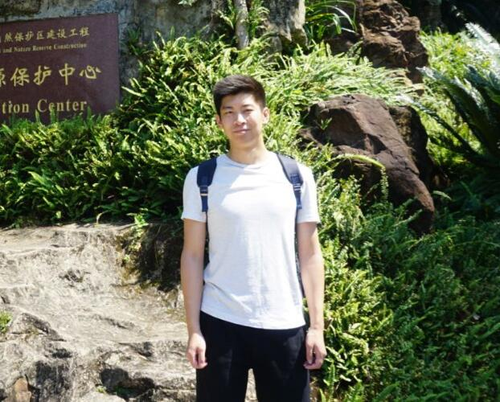

Yu HouMaster Candidate
Songling Road #238 |
 |
Biography
I am a graduate student of Ocean University of China, working with Prof. Yong Zhao. My major is applied mathematics and my research direction is computer graphics and deep learning. I am committed to designing new 3D model segmentation algorithms, segmenting the 3D model into different meaningful parts efficiently and robustly. I also have expertise in deep learning and understand different deep learning algorithms such as convolutional neural networks(CNN) and generative adversarial networks(GAN). I can use C language and python proficiently. Besides, I am skilled in deep learning frameworks such as tensorflow and keras. Recently, I focus on metric learning and Graph Neural Network (GNN) to solve different problems.
Projects

|
|
|
|
Selected Publications
|
|
A Robust Mesh Segmentation Algorithm Yu Hou, Yong Zhao. International Conference on Computer-Aided Design, Manufacturing, Modeling and Simulation (CDMMS), 2020. [code] |
|
|
Application of deep learning method in high resolution processing of Significant wave height Xiaowen Zhu, Yu Hou, Yuhai Liu, Kejian Wu. Periodical of Ocean University of China, 2020, 50(12). |
Education
-
Ocean University of China, Qingdao, Shandong, ChinaSept. 2018 - Present
Major: Applied Mathematics
Research Interests：Computer Graphics, Deep Learning
Advisor: Prof. Yong Zhao
-
Ocean University of China, Qingdao, Shandong, ChinaSept. 2012 - Jun. 2016
Major: Mathematics and Applied Mathematics
Experience
-
Sugon, AI Ocean Research Group, Qingdao, Shandong, ChinaMar. 2019 - Jan. 2020
Algorithm Research Intern
Topic: Deep Learning for Biodensity Estimation
-
JOYO, Research and Development Department, Shenzhen, Guangdong, ChinaApr. 2018 - Aug. 2018
Algorithm Engineer
Topic: Design Signal Processing Algorithms
Honors & Awards
| National Post-Graduate Mathematical Contest in Modeling, Third Prize Award, 2019 |
| Science and Technology Competition Scholarship, 2019 |
| "Sharing Cup" Innovation Competition of Science and Technology Resources Sharing Service for College Student, Excellence Award, 2020 |
| Cultural, Sports and Social Activities Scholarship, 2020 |
| Outstanding Graduate Student, 2020 |